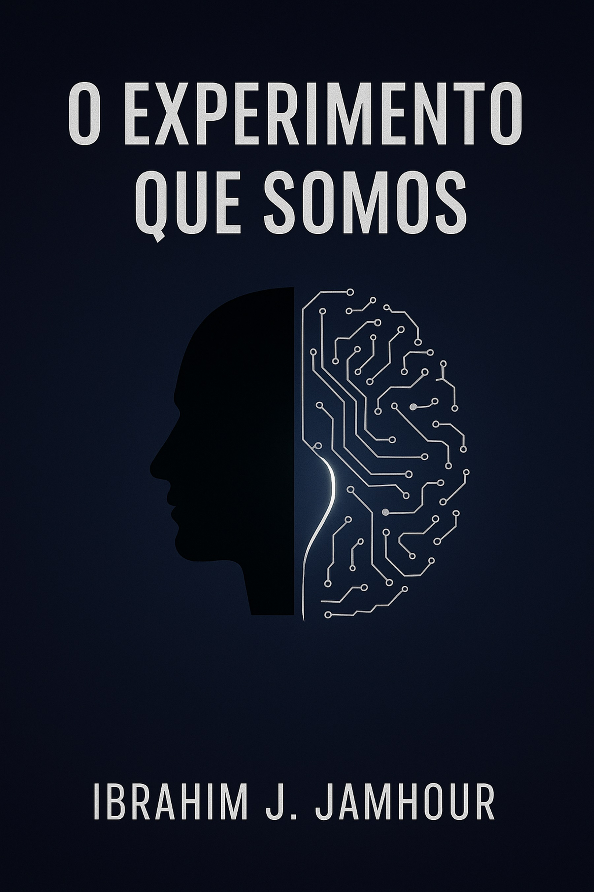

Livro 1
O Experimento que Somos
Reflexões sobre humanos, máquinas e o futuro comum
O primeiro movimento observa a inteligência artificial como transição civilizacional. O livro discute automação, verificação, controle, realidade mediada por modelos e coevolução entre humanos e sistemas. A questão central é como preservar julgamento, autonomia e responsabilidade quando decisões passam a ser filtradas por arquiteturas técnicas cada vez mais presentes.
Para quem quer começar pela escala social, política e civilizacional da IA.